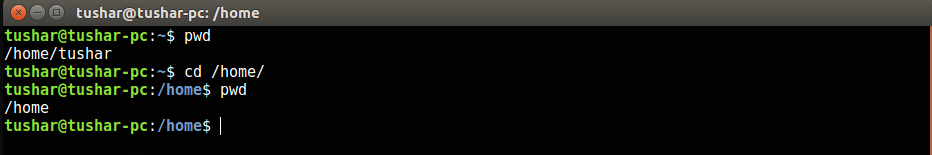

Basic Linux Commands
pwd: It stands for Present working directory. Whenever you open a terminal and want to find out the directory in which you currently working, just type this command and it will give you the absolute path i.e. starting from the root. In linux (/) is the main partition. Remember tidal(~) indicates that you are in home directory.
ls: This is a list commands shows all the contents of the current directory. If you want to see hidden files type ls -a
cd: This stands for change directory. You can navigate between your directories using this command. By typing cd command without specifying any directory name, one can go directly to user's home directory.
su: This stands for switch user. Using this you can shift between various users residing on a system. Simply typing su will switch to root(super user). Root has the highest previleges in linux.
touch: This command is used for creating new files. Even if you don't give extension it doesn't matter.
mkdir: This command is used to create directories(folders). The below command will create a directory named sample in the present working directory. In order to create a directory to a specific location you can mention relative path or absolute path. To know about these paths visit.
cat: This command is used to view the contents of the file. Apart from this there are various other function of this command.
cp: This command is used to copy any file or directory. You can give absolute as well as relative paths. This cp command can be used along with parameters such as r(recursive), f(forcefully), v(verbose). These parameters are optional.
mv: This command is used to move any file or directory. Similarly like cp command this command can be used along with parameters with parameters such as r(recursive), f(forcefully), v(verbose). These parameters are optional.
user@Desktop:~$ pwd
/home/username/Desktop


user@Desktop:~$ su student
user@Desktop:~$ touch file.txt
Similarly if you can create multiple number of files at a time below command. It creates 10 files. After running this command you can see them by executing ls command.
user@Desktop:~$ touch file{1..10}.txt
user@Desktop:~$ mkdir sample
In order to create a directory inside a directory execute the following command.
user@Desktop:~$ mkdir -p parent_directory/child_directory
user@Desktop:~$ cat filename
This command is used for writing to a existing file. If you replace > with >> it can used for appending to existing file.
user@Desktop:~$ cat > filename
The following cat command can be used for copying contents of one file to another file.
user@Desktop:~$ cat file1 > file2
user@Desktop:~$ cp -rvf source destination
user@Desktop:~$ mv -rvf source destination